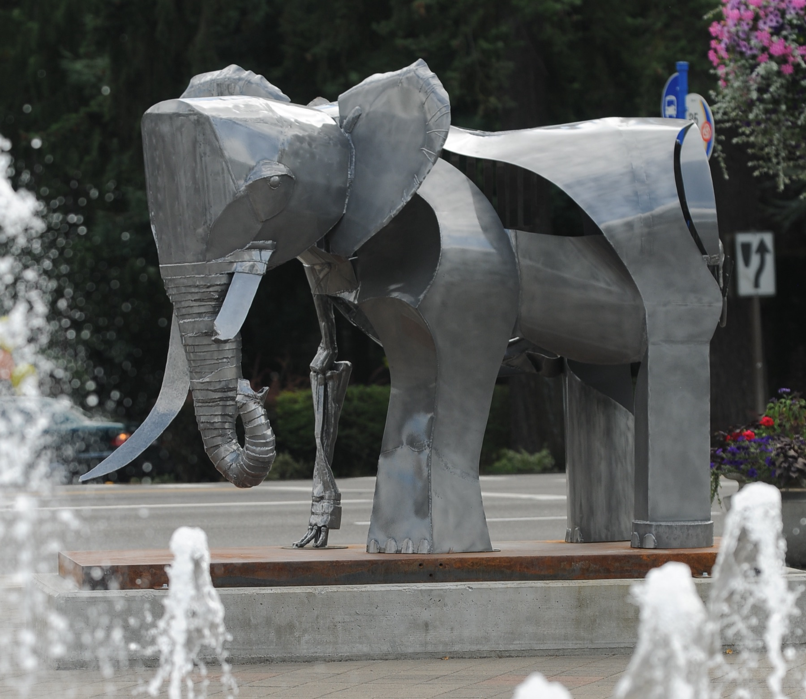

August Trunk
Mild steel with aliphatic urethane; corten steel base · 6.5′ high × 5′ wide × 10.5′ long · 2008
Collection of the City of Lake Oswego, Oregon · People's Choice Award, Gallery Without Walls, 2011

More views
{kind=link}
{kind=link}
{kind=link}
{kind=link}
{kind=link}
{kind=link}
This piece was in response to a trip to Africa to see the elephants in the wild. I felt an urgency to do so as they were increasingly being targeted by poachers and their habitat being lost to the expanding needs of humans. This trip resulted in the sculpture where the elephant form is represented as skeletal on one side and abstracted but fleshed forms on the other.
August Trunk stood in downtown Lake Oswego, Oregon from 2009 to 2011 as part of the Gallery Without Walls juried exhibition, where it was voted the People's Choice Award and purchased by the city for its permanent collection. A maquette of the piece was a finalist in the Cedarhurst Biennial Sculpture Competition in Mt. Vernon, Illinois.